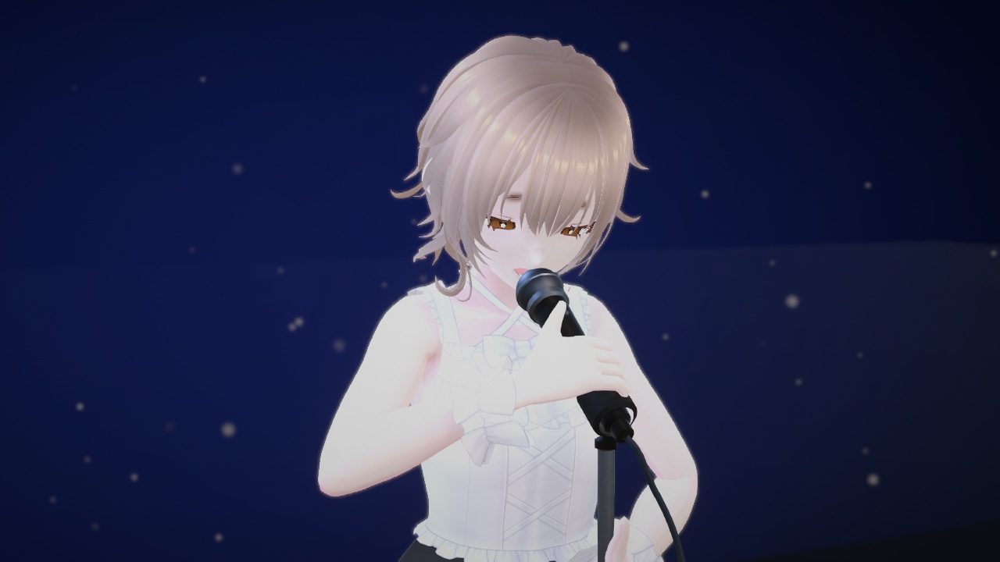

换一首歌，lin 就能对着口型、踩着节拍把它唱出来。
智能体驱动，全程本地，开源免费。
想让一个虚拟角色唱完一整首歌，现在常见的几条路都有硬伤。
付费 AI 数字人和视频生成按秒、按次计费。一首四分钟的歌反复生成几遍，就是一笔不小的开销。
结果是一段成品视频。手势不对、表情不对，只能整段重新抽卡，没办法只改一句。
“说话”数字人处理不好拖长音、换气、嘶吼和假声，嘴总是比歌声早一点或晚一点。
动作不落在拍子和小节上，副歌和主歌一个样，看起来像在念稿，不像在演唱。
十步流水线，每一步只产出一个文件。任何一步都能单独重做或替换。
song.wavvocals / no_vocalslines.jsonmorae.jsonstructure.jsonface.jsonchoreo.json → key.binshow.txtsubs.asssong.mp4不是要取代写实数字人，而是让“角色唱歌”这件事便宜、可控、懂音乐。
| lin-sing | 付费 AI 数字人 / 视频生成 | |
|---|---|---|
| 费用 | 免费，用本地显卡 | 按秒或按次计费 |
| 能不能改 | 编舞表的每一条都能改，几秒重烘 | 只能整段重新生成 |
| 口型与字幕 | 逐音节对齐，专门处理唱歌的长音和闭唇；你给的歌词直接变成双语字幕 | 多为说话口型，字幕要另外做 |
| 音乐感 | 动作落在拍子和小节上，主歌、副歌分档 | 动作和音乐基本无关 |
| 角色一致 | 同一个 3D 模型，每一帧都是她 | 换个镜头，脸可能就变了 |
| 时长 | 一次最长 10 分钟 | 常见单段几秒到一分钟 |
| 隐私 | 歌曲不出本机 | 需要上传 |
| 画面 | 3D 卡通渲染、舞台和立麦 | 可以是写实风格 |
需要 Python 3.10+、ffmpeg 和 Unity 6；有 NVIDIA 显卡更快。
先按你的显卡装好 PyTorch，再装其余依赖。
pip install -r pipeline/requirements.txt用 Unity 6 打开 unity/，点菜单 LinSing / First-time Setup。它会重新导入 lin 并量好她的尺寸。
把歌词发给智能体，或者存成 txt：一行一句；要显示译文就写成“原文 | 译文”。没有歌词也行，程序会自己听，但准确度会低一些。
python linsing.py make 我的歌.mp3 --lyrics 歌词.txt --mood sad在 Unity 里点 LinSing / Load Song Folder，选中 songs/我的歌，再点 Play，就能带声音实时看。
比如说：“副歌第二句双手打开，最后一句俯身贴麦。”它会改 choreo.json 并重新烘焙。
python linsing.py bake ../songs/我的歌Unity 会自己打开、渲染、关闭，最后合上声音并烧好字幕。
python linsing.py render ../songs/我的歌 --from 60 --to 90 python linsing.py render ../songs/我的歌只支持 10 分钟以内的音频，超过会被拒绝。
一次输入 5 分钟以上的音频，电脑可能会卡顿：人声分离、音节对齐、动作烘焙的耗时和显存都随长度增长。程序能跑完，只是会慢；也可以先把歌切成几段分别处理。
一份说明书，三种接法：AGENTS.md（读说明）、MCP（调工具）、函数调用（只有 API 时）。
| 智能体 | 怎么接 |
|---|---|
| Claude | CLAUDE.md 指向 AGENTS.md；也可以注册 MCP 服务 python pipeline/mcp_server.py |
| ChatGPT / Codex | 直接读 AGENTS.md；支持 MCP 的客户端注册同一个服务；只有 API 时用 agent_tools.json 做函数调用 |
| DeepSeek | 放进任何能读 AGENTS.md 或接 MCP 的工具里用；直接调 API 时同样用 agent_tools.json |
| Trae | .trae/rules/project_rules.md 指向 AGENTS.md，再在 Trae 里添加 MCP 服务 |
| Cursor / Copilot | .cursor/rules/ 和 .github/copilot-instructions.md |
MCP 工具：linsing_check · linsing_make · linsing_get_choreo · linsing_set_choreo · linsing_render
每一步都有固定的“接口文件”。换工具时，只要新工具产出同样格式的文件，后面的步骤完全不用改。
vocals.wav / no_vocals.wavlines.json · {t, end, text, trans}morae.json · [辅音, 元音, 起, 元音起, 止, 分]structure.json · beats / barsface.json · 60 fpschoreo.json → key.binshow.txt · cam2 / col / tint / litsubs.ass / subs.jsonkey.bin · float32 × 57 通道VRoid 制作的 VRM 1.0 模型。作者允许再分发、修改和商用。
代码生成的预制体，话筒高度已按 lin 的嘴实测摆好。
24 个编舞动作、17 个手部姿势、43 个代码手势、Quaternius CC0 动画库、14 段 BEAT2 动捕片段。
Mixamo 动作因为 Adobe 条款不能再分发，没有包含。代码使用 MIT 协议，各项资产的授权见 ASSETS.md。